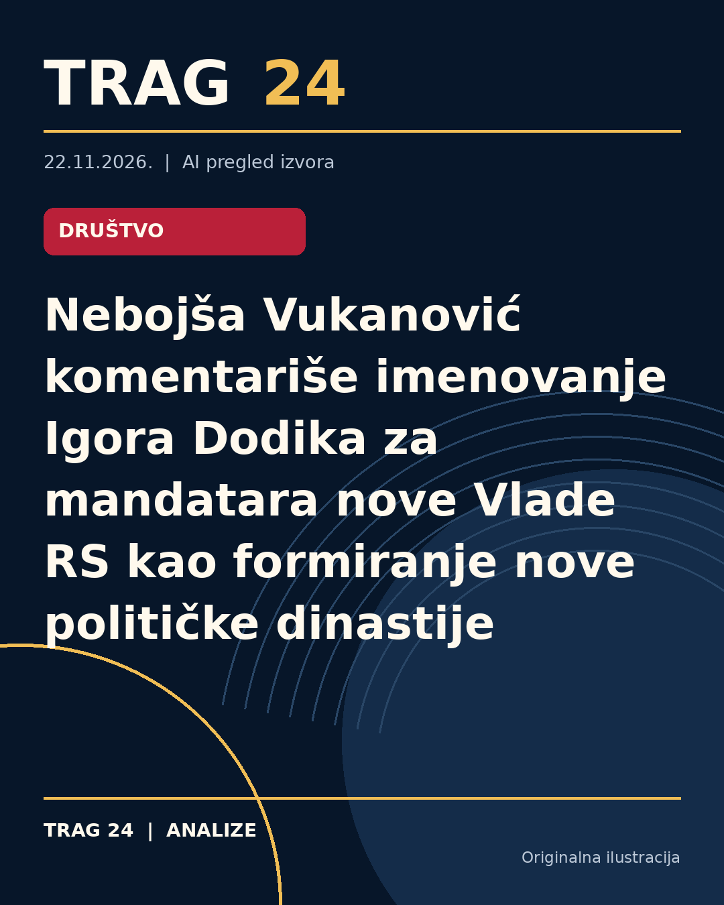

Nebojša Vukanović komentariše imenovanje Igora Dodika za mandatara nove Vlade RS kao formiranje nove političke dinastije

ŠTA SE DOGODILO
Igor Dodik, sin lidera vladajućeg Saveza nezavisnih socijaldemokrata (SNSD) Milorada Dodika, imenovan je za mandatara za sastav nove Vlade Republike Srpske (RS). Ovu odluku potvrdio je predsednik RS Savo Minić nakon konsultacija sa strankama vladajuće koalicije, saopštivši da je Igor Dodik najmlađi mandatar u istoriji RS i da se očekuje da novu vladu formira do polovine decembra.
HRONOLOGIJA
Nakon što je Savo Minić održao konsultacije sa vladajućim političkim partijama, odlučio je da Igora Dodika predloži za mandatara nove Vlade RS. O tome je izvestio javnost, a potom su usledile reakcije opozicije, među kojima je i izjava Nebojše Vukanovića, lidera opozicione Liste za pravdu i red.
ŠTA NAVODE IZVORI
Nebojša Vukanović je u svojim izjavama i tekstovima izrazio ironičan stav prema imenovanju Igora Dodika, upoređujući proces prenosa političke moći u RS sa nasleđivanjem prestola u monarhiji. On je istakao da se time u RS formira nova dinastija Dodik, pominjući i ranije srpske vladarske dinastije poput Karađorđevića, Petrovića, Obrenovića i Nemanjića. Vukanović je kritikovao nova politička imenovanja, uključujući i mogućnost da Igor Dodikova sestra Gorica dobije neki resor, što je nazvao predlogom za uspostavljanje „resora za modu i ugostiteljstvo“. On je upozorio da Srbi istorijski ne vole monarhiju te je izrazio očekivanje da će se u budućnosti videti da li će doći do otpora protiv ove nove „dinastije“. Takođe je naveo da je Igor Dodik prošlost kratku pravnu tužbu protiv njega zbog kritičkog teksta, koju je izgubio.
ŠTA JE POTVRĐENO
Potvrđeno je da je Igor Dodik imenovan za mandatara nove Vlade Republike Srpske od strane predsednika RS i vladajuće koalicije. Takođe je jasno da je Nebojša Vukanović izneo metaforičke i kritičke komentare o ovom imenovanju, uključujući ocene o političkoj moći i položaju porodice Dodik u RS.
ŠTA NIJE POTVRĐENO
Nije potvrđeno da RS ima politički model koji se može doslovno opisati kao monarhija ili da se u formalnom smislu prenosi vlast kao u kraljevskoj dinastiji. Takođe, nema potvrde o planovima da Igor Dodikova sestra Gorica dobije određeni resor, što je izrečeno kao ironičan komentar. Nisu potvrđene ni daljnje političke posledice ili buduće reakcije javnosti na imenovanje.
ŠTA OSTАJE OTVORENO: Ostaje nejasno kako će se politika u RS dalje razvijati i da li će doći do promena u vlasti ili otpora prema aktuelnom vođstvu i porodici Dodik, kao i kakav će biti učinak novog mandatara Igora Dodika na formiranje i rad Vlade. Takođe nije poznato da li će se u narednom periodu ostvariti predviđanja o većoj porodičnoj uključenosti u vlast, odnosno uloge Igorove sestre Gorice.
Izvori
- https://n1info.rs/region/vukanovic-srbi-dobili-dinastiju-dodik/
- https://www.blic.rs/vesti/politika/vukanovic-srbi-dobili-novu-dinastiju-dodik-ostaje-da-se-vidi-da-li-ce-i-princeza/q2455bd
- https://nova.rs/vesti/svet/vukanovic-srbi-dobili-novu-dinastiju-dodik-ostaje-da-se-vidi-da-li-ce-i-princeza-gorica-dobiti-neki-resor/
Ova analiza je pripremljena uz pomoć veštačke inteligencije na osnovu javno dostupnih izvora. Navodi izvora nisu nužno nezavisno potvrđeni.